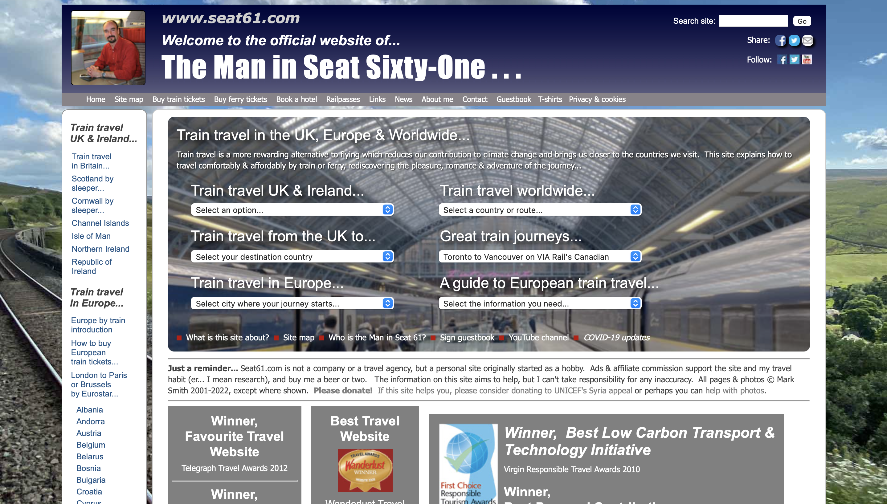
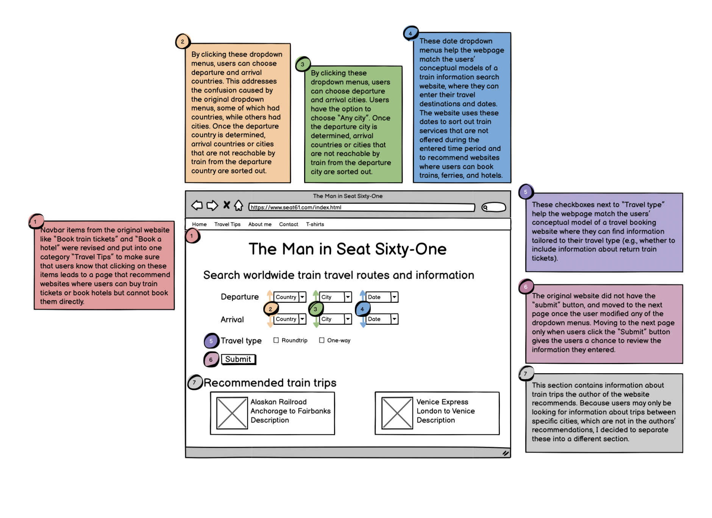
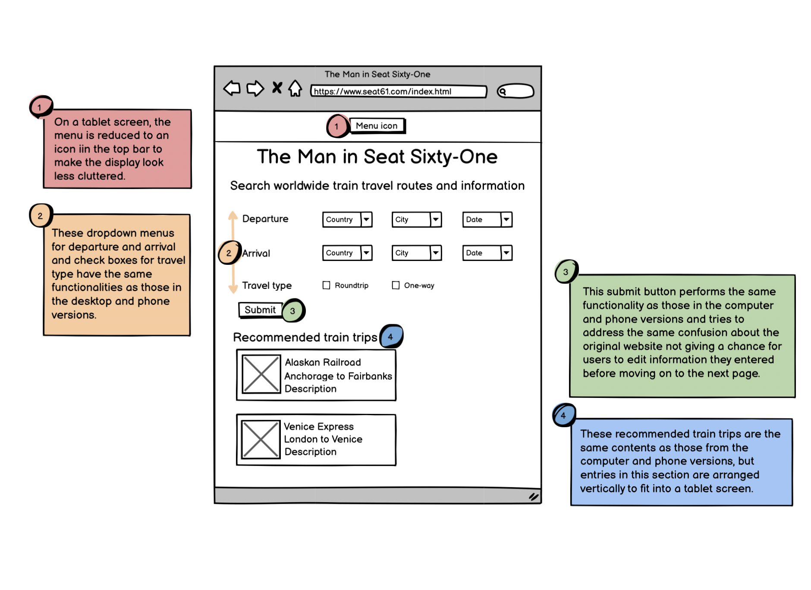
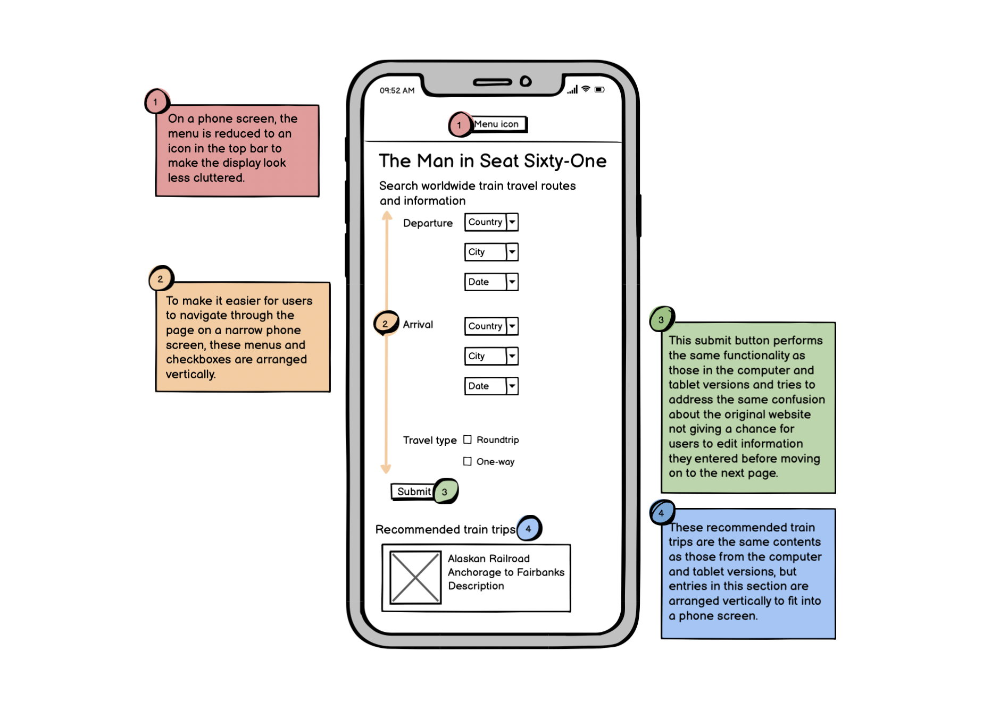
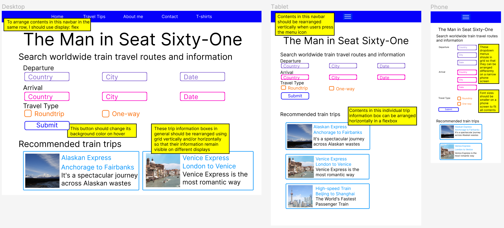
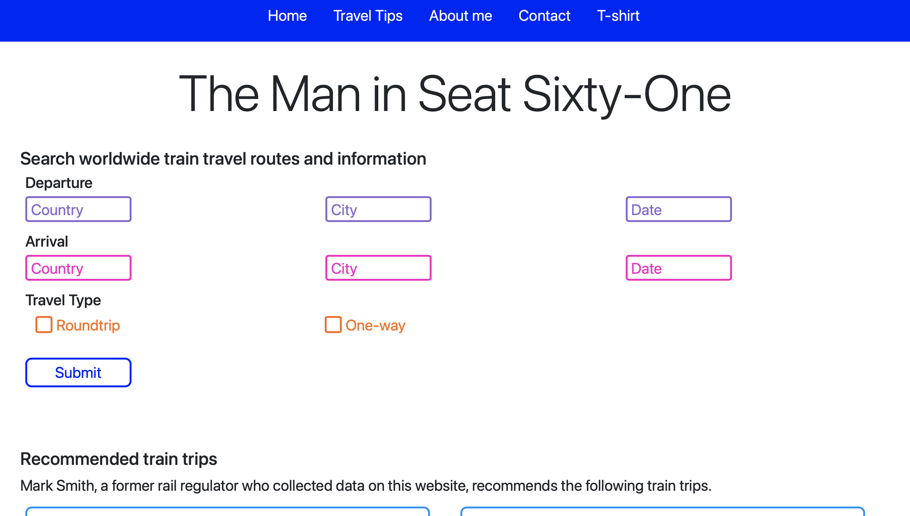

Responsive Redesign: Redesigning a Train Travel Website
Context and Problems
I completed this project as my assignment for the User Interface/User Experience class at Brown
in Fall 2022.
I chose to redesign the website visualized below, which offers information about worldwide train trips.
As someone who loves traveling, I appreciate websites that offer thorough information about transportations
in different countries,
but the website I found was too complicated to navigate through despite offering valuable information,
which is why I chose to redesign it. You can find the link to the original website here: https://www.seat61.com/index.html

Before designing a new version of the original website, I identified problems the website had in terms of learnability,
memorability, usability,
users' mental model of the website, and accessibility. Here are my findings.
This page is not learnable, because...
- The contents in the "Train travel in the UK, Europe, and Worldwide" section
compose a subset of contents in the long window on the left-hand side of the page.
- It’s unclear what types of train travels classify as “Great train journeys”
and how the information this section conveys differs from the ones that other sections already cover.
- Tabs like “Buy ferry tickets” and “Book a hotel” in the navbar are misleading,
because they lead to pages that show recommendations about
websites where people can book ferry tickets or hotels,
instead of allowing them to book them without leaving this website.
- Although there are multiple dropdown menus,
users can only manipulate one menu at a time,
because changing values in one of the dropdown menus takes the user to another page,
without giving a chance for users to enter values in more than one dropdown menu or modify values they entered.
This page is not memorable, because...
- Users may not be able to remember that if they want to find information
about traveling by train in Asia specifically,
they need to scroll down the page and
find a section titled “Train travel in Asia” in the narrow column on the left-hand side
- Users may not remember which dropdown menu to select in the "Train travel in the UK, Europe, and Worldwide" section
if they want to search for trains leaving from a specific city,
because some dropdown menus show country names, while others show city names.
This page is not usable, because...
- If users want to find trains that travel from one city to another,
they cannot select both departure and arrival cities on the same page.
This page doesn't match users' conceptual model, because...
- Users cannot specify arrival and departure countries or cities.
- Users cannot enter dates during which they will be traveling
- Users may have the illusion that all countries listed under “Train travel worldwide”
would be reachable solely by train,
because upon opening the dropdown menu,
they are asked to choose a country they want to search “train travel to, in, or from”.
However, that is not true for some countries like Japan, which is an island country
that is not connected to any other countries via underwater tunnels.
This page may not be accessible, because...
- WebAIM WAVE pointed out low contrasts in the navbar and the middle window of the page.
I agree with this problem, because the white text that the website used
on the light gray navbar and the bright picture in the middle window doesn’t stand out,
which may be problematic to visually imparied people.
- WebAIM WAVE also pointed out redundant links for train travels in Azerbaijan and Armenia,
which are in the left column. I agree with this problem too,
because since clicking “Azerbaijan” and “Armenia”
both lead to the same page titled “How to travel by train in Georgia, Armenia, Azerbaijan”.
It’s better to group these three countries into one menu item.
Visual Redesign
Low-fidelity Wireframing
Based on my findings from the previous part, I created annotated wireframes for desktop, tablet, and phone versions of the redesigned
website. Wireframes show rough ideas about what the website may look like. In each wireframe, please refer to color-coded
circles and boxes to learn more about what each page component does and what problems from the original website it addresses.
Desktop version of the webpage is shown below:

Tablet version of the webpage is shown below:

Phone version of the webpage is shown below:

High-Fidelity Prototyping
Based on wireframes, I created high-fidelity models of the webpage's desktop, tablet, and phone versions,
along with a design board that I used to come up with styles of the webpage's components and color scheme.
I assigned specific colors and shapes to the website's components and used these models when I programmed the website.
Please note that annotations indicating webpage implementation details are in yellow boxes.

Responsive Redesign
I programmed the final version of the webpage based on the high-fidelity prototypes I made.
This project helped me become more familiar with the process of redesigning a website and learn aspects I need to consider when
designing a learnable, memorable, useful, and accessible website. Click here to view the redesigned webpage!

Conclusion
I completed this project as my assignment for the User Interface/User Experience class at Brown
in Fall 2022. Through this project, I learned valuable design principles that I need to consider in order to
make digital products useful and usable.